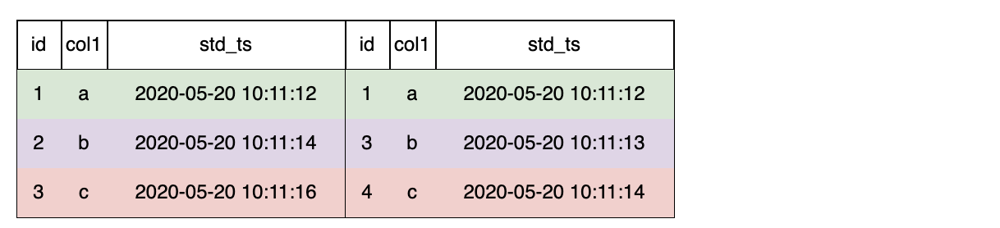

JOIN Clause
OpenMLDB目前仅支持LAST JOIN一种JoinType。
LAST JOIN可以看作一种特殊的LEFT JOIN。在满足JOIN条件的前提下，左表的每一行拼取一条符合条件的最后一行。LAST JOIN分为无排序拼接，和排序拼接。
- 无排序拼接是指：未对右表作排序，直接拼接。
- 排序拼接是指：在先对右表排序，然后再拼接。
Syntax
JoinClause
::= TableRef JoinType 'JOIN' TableRef [OrderClause] 'ON' Expression
JoinType ::= 'LAST'
SQL语句模版
SELECT ... FROM table_ref LAST JOIN table_ref;
边界说明
| SELECT语句元素 | 状态 | 说明 |
|---|---|---|
| JOIN Clause | 仅支持LAST JOIN | 表示数据来源多个表JOIN。OpenMLDB目前仅支持LAST JOIN。在Online Serving时，需要遵循Online Serving下LAST JOIN的使用规范 |
LAST JOIN without ORDER BY
Example: LAST JOIN无排序拼接
-- desc: 简单拼表查询 without ORDER BY
SELECT t1.col1 as t1_col1, t2.col1 as t2_col2 from t1 LAST JOIN t2 ON t1.col1 = t2.col1
LAST JOIN无排序拼接时，拼接第一条命中的数据行

以左表第二行为例，符合条件的右表是无序的，命中条件的有2条，选择最后一条5, b, 2020-05-20 10:11:12

LAST JOIN with ORDER BY
Example: LAST JOIN排序拼接
-- desc: 简单拼表查询 with ORDER BY
SELECT t1.col1 as t1_col1, t2.col1 as t2_col2 from t1 LAST JOIN t2 ORDER BY ts.std_ts ON t1.col1 = t2.col1
LAST JOIN时配置 Order By ，则右表按Order排序，拼接最后一条命中的数据行。

以左表第二行为例，符合条件的右表有2条，按std_ts排序后，选择最后一条3, b, 2020-05-20 10:11:13
最后的拼表结果如下： 